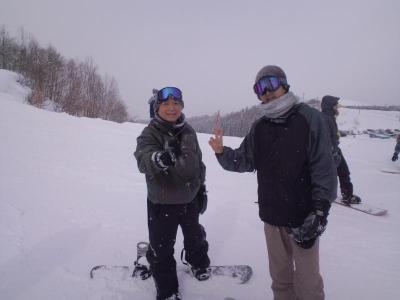

今日は1試合目で怪我をしてしまいその後みなさんの休憩時間をなくしてしまいすいませんでした。これからはもうちょっと気をつけてプレーしたいと思います。ハマさん湿布ありがとございました。みなさん今日は迷惑おかけしましたがこれからもよろしくお願いします。
今日は世間的にはニャンコの日だそうですが、うちにとってはボコラレリータ２回目でしたね（笑）
お誘い頂いたカムさん、ありがとうございました。でも相手としては役不足だったかもしれないですね。でもとてもいいプレーが多くて、いい勉強になりました。
うちが上を目指すチームではないのは変わりませんが、お相手さんのように、パスを出すほうもそこに出したら誰かが走るだろう、受けるほうもそこに走ればボールが来るだろうという意識を持つことは大切だなって思いました。まあ、それをする体力がないかもですけどね（笑）、まあ、少しずつボールを待っているのではなく、マークからずれる動きが出来ればいいですね。後はフリーな時は声掛けしていきましょう。
今日は空模様に振り回された感じでしたね。結果的にはグランド状態は良くて、ちょっと雨もありましたが時折日差しもありましたね。
１チームがキャンセルとのことで２チームになりましたが、実際始めてから３時間以上あったのでおじさんチームにはきつかったっすね（笑）
今日は、ぼろ負けしましたけど、うちのコンセプトである、負けても楽しもうが表れていたと思いますし、何より試合中に味方への批判が無く、失敗してもその前のプレーを褒めようがきちんとみんな守ってくれているのが何よりも嬉しく感じました。
一つだけ心配が、くぼちん大丈夫かな？最初のキーパーしてくれてた時に相手と接触してむち打ちみたいになってたのが心配です。せっかく来てくれたのにその後見学してたのが残念ですね。スポーツ保険使う場合は早目に連絡してくださいね（あまり報告時間が過ぎると、使えなくなるかもなので）、なにより良くなることを願ってます。
簡単にですが試合を振り返っていきたいと思います。２０分６本をしました。
１試合目は最初ゆっくりかなって思ってたら、相手さんの怒涛の攻撃が始まりましたね。今日はバックもキーパーもほんと大変だったと思います。特にふっかんの奮闘が光りました。
２試合目は唯一引き分けでした。１試合目審判してた時に裏を取られることが多かったので、久々にほぼスイーパーで僕は入りましたが、個人的にはいい感じで裏へのパスは潰せたかなって思ってます。それでも結構相手のミスに助けられましたし、何よりごりんさんがキーパーで、逆をつかれながら体制を変えて、ぎりぎりでのゴール阻止が大きかったですね。攻めもユウちゃんが中央突破で相手ゴール近くまで攻めたんですが、囲まれちゃいましたね。
３試合目は相手のめちゃ上手な人に個人技で結構やられましたね。もうスピードと個人技で抜かれたらお手上げですね。僕は最近、久々に「シュート」（漫画）読んでたので、キックオフゴール狙ったらだふって、キーパーの手元にゆるーい球が（涙）
４試合目は僕はキーパーしましたが、ある意味フィールドより疲れて壊れてました（笑）、開始早々、スガちゃんの素晴らしいオウンゴールが炸裂し、その後も前に出たり、左右に動きまくったりでふらふらになって、ゴールキックもだんだん飛ばなくなるし、飛んだと思ったら、ライナー性の無回転のブレ玉とかやしね。でもおもろかったす。
５試合目は・・ていうか今日はキーパーがらみのネタばっかり（笑）、わだっちがキーパーでゴールキックでユウちゃんあてにボール蹴ろうとしたら、カキさんの足に当たって、その後敵チームへ、相手の前にカキさん居たんだけど、時間が止まったように微動だにせず、相手さんも不思議がりながらカキさんの横を通過・・・ゴール。あの時はボール持っている人以外、みんな時間がゆっくりと感じたんだと思います（笑）
僕も初めて右サイドから切り込めたけど、中に人が居なくて残念でした。
最後の試合のハイライトは、まずはやっぱりキーパーネタ、もりちゃんが相手チームが縦パスから走りこんで来て、勇気を持って、前でカット・・のつもりが急ブレーキ（笑）、その後バックしてボテ（笑）、キーパーした人は気持ちわかります（笑）
もう一つはまえちゃんが華麗にドリブルして中央突破、カキさんへのスルーパス、振り向かずにカキさんのかかとにボールが乗って、もしかしてノールックスーパーヒールリフト炸裂・・・んなわけないよね（笑）、あれは結局オフサイドだったかな？でもいい動き出しでしたよ。
ごりんさんも同じように中央をドリして、いい感じのミドル、相手キーパーがかろうじて防いでコーナーになりましたけど、あれがうちの初シュートだっけ（笑）
まあ、なんにしろ、バックの練習が出来たということにしときましょう。（笑）、今後の普段の練習でも大きくコートを取って、裏に走ったり、ワンツーのことを意識して出来ればいいですね。まあ、ぼちぼちと楽しみながらしましょう。
番外編では、やっぱりよっしー。スパイク忘れるわ、トイレ近くにあるのに遠いほうに行くわで、やっぱり持っている人は違いますね（笑）
来週はかんぺいマラソンのため、場所がまだ未定です。決まり次第、連絡します。
本日参加された皆さん、お疲れ様でした。
先週は夜間の雨のために残念ながらフレンドリーマッチ出来ず、今日は２週間ぶりの練習でしたが、合計１４名の参加がありました。金曜日だっけ？雪が降ってたので、今日も枯れ葉必要かなって思ってましたが、グランドはいい感じでしたね。
近くの囲いには芝生が乗せられてて、帰り土手から見たら違う場所にも同じようなものがあって、ドックランのスペースでも作るのかなって思いました。そうなるとちょっと気を付けながらしないと駄目になりますね。
今日のコントはいつもどおり、前ちゃんと柿さんのやりとりに森ちゃんのボテがありましたが、簡単に報告程度で（笑）
練習はいつもと違うことをちょっとチャレンジしたりしました。来週の試合予定に向けての準備で結構走ることが多かったかもしれないですね。
最初はアップを兼ねて、鳥かごをして、その後はポストシュートなんですが、普段と違いどちらかといえばワンツーみたいな感じで真ん中にポストでは無くて左右にポストが居て、真ん中にボールを返して、そのままやトラップしてシュートをしました。試合でもワンツーでもらってそのままシュートとかもありますしね。
次はセンタリングシュートですが、これもコーナーから単にボールを蹴ってじゃなくて、真ん中からちょっドリして、サイドへパス、サイドはボールが来たらドリしたり、そのままとかいろいろな形でクロスを入れて、真ん中の人がシュートみたいな感じでした。個人的にはこれが疲れた、サイドからのクロスをメインで３人で蹴ってましたが、僕だけ蹴った回数がかなり多かった気が（涙）、まあ、受けた場所からゴールに向かうアーリークロスを左足であげてたことが多かったので仕方ないかな。でもずっとライン際からマイナスが多かったですが、ゴールに向かっていくクロスもありだなって個人的には思いましたね。
次は一つのゴールで攻めと守りですが、いつもと違って広くコートを取った上に、バックも単にボールを取ったら終わりじゃなくて、ラインを決めてそこまで持っていかないと終了にならないようにしました。結構、バックがボール取っても攻めが取り返したりと、実践的な感じで楽しく出来ました。時間があまり出来なかったので、次からはもう少し時間を取って出来ればよかったかなって思います。
最後はもちろん、ミニゲでした。７対７にしては少し広めで取りました。サイドとかいろいろ使って、バリエーションある攻撃がいろいろあったりで良かったです。ただ、シゲさんが急にこけたのがちょっとびっくり大丈夫だったかな？ていいながら、僕もミニゲの前に思いっきり顔からダイブしたんで人のこと言えませんでしたけどね（笑）
まあ、そんな一日でした。参加された皆さんお疲れ様でした。
来週は招待試合です。お天気がまたまた微妙ですが、実施される時は早目に行って、アップやお手伝いをしましょう。堤防の駐車場は狭いです、今の時期は満車で入れないことはないかもですが、反対に８時くらいについてもゲートが閉まっているかもしれません、その時はゲートを空くのを待ちながら、着替えや簡単な準備運動とかを各自しておいてください。
よろしくお願いします。

今日は寒かったですね～。
そんな中、体験参加さんも含めて、１５名の参加がありました。久々の森ちゃんやシゲさんとかに会えてよかったです。
前日の雨？雪？の影響で、ところどころ、いつも通り水たまりがあり、しかも凍ってて、グランドをどのようにしようかと考えていて、ゴールは一本木の方で、ミニゲは駐車場のほうがいいかなって思ってたら、とある人が来られて、駐車場側のところで、ドックランを開催すると、許可状をもらっているんですって言われたので、そんな許可状があるんだとびっくりしましたが、もちろん優先なので、場所を譲って、結局は奥側でちょっと狭い感じでしたが、楽しくしました。
最初はパス交換から鳥かごして、ポストシュートはいつもの流れで、その後は、右コーナーからのセンタリングシュートをしましたが、逆風の中、中々ボールが飛ばず、滞空時間の長いボールとかも多くて、シュート打つ人は難しかったと思います。
ユウちゃん、わだっち、かっきーがお互いをいじりあってたのが面白かったです。
その後は、ミニゲをしました。グランド面積を考えて、５人３チームでしようかと思ったりもしましたが、寒かったので結局は少し狭めで７対８をしました。そうするには水たまりが邪魔で、最初はコーンでトンボのように水を書き出して、土が無かったので枯れ葉を変わりにまいたりとしましたが、途中でハマさんがスコップを持ってきてくれ、水を結構すくってくれて、少しましになりましたが、やっぱりジュクジュクでしたね。
そんなサイドをはまっちが得意場所として、支配していたのがびっくりっす。
ミニゲする前に、ドックランの人に敷地内にボールとか入ったりで迷惑をかけるかもしれませんと伝えに言ったところ、気にしないでくださいね～って言っていただいたんですが、その後に、１匹サッカーボール大好きワンちゃんが居て、ボールをくわえて、牙で穴をあけてしまうっていうことをさらっと・・・、その後はスガちゃんのボールでしましたが、ドックランの方向にボールがいったら、みんなダッシュ、そのたびにスガちゃん、ヒヤヒヤだったですね（笑）
最初から、８人チーム有利と思ってましたが、１試合目は７人チームのサイド攻撃等が結構上手で、崩されて得点されたのが印象的でした。あと何試合か、８人チームなのに、７人チームのスパイって感じの人が居ましたね（笑）。まあ、一生懸命してミスったりするのは仕方ないですしね。
なんだかんだでけが人もなく、寒い中でしたが楽しくできました。
個人的にはミニゲでたっちゃんとの１対１がおもろかったです。あとはほんと体が重くて、動けなかったです、周りから風邪とかちゃうん、大丈夫？とか心配の声頂きましたが、そんなんではないので、ご安心を。今日の僕とスガちゃんはヘロヘロでした。
ヘロヘロの中、シュートしたら思いきり外れて、ボールは転がって、かきさんの車に当ててしまったし、柿さんごめんなさい。
それでもみんなでボール蹴りたいのでと参加しましたが、無理やわーってお休みした裏切りＧさんもきっと来てたら、動かないロボット状態でしたでしょう（笑）
来週は試合です、主催はうちではありませんし、お誘いして頂いたジュネオさんは朝から試合をしているみたいで、準備は必要はないかもですが、何かあれば積極的にお手伝いしましょう。
試合ですので１０時には集合お願いしますね。しっかり準備運動して、アップして頑張りましょう。
本日参加された、皆さんお疲れ様でした。
今日は朝早くから、参加された皆さんお疲れ様でした。
基本は月１なんですが、グランドがたまたま取れたのでもったいないのでと、以前に初試合した後にたまたま現地で会った、以前のチームで知り合いだったYODRIDさんにいつか試合しましょうって声を掛けて頂いたので、お誘いさせて頂きましたが、予想通り、数段レベルが上で、ぼこられりーたになりましたね（笑）
まあ、それでもうちのサッカーはミスしても何点取られても試合を楽しむことがコンセプトなので、いい時間を過ごせたと思います。たくさん得点を取られましたが、メンバーみんなが励ましあって、ミスしたりしても非難の言葉が一切なかったのは、うちのチームの良さだなって改めて思えて嬉しかったですね。
ほんとお相手には役不足でしたが、対戦して頂いたYODRIDさん、ありがとうございました。次の機会があれば、ハンデ１０点くらいの条件でお願いします（笑）、多彩な攻めとかパスつなぎとかほんと勉強になりました。
今日は、最初の試合でたっちゃんが大ボケかましてくれて、それからはあんまり覚えてないや。（笑）、なんか途中でカツさんがこけてたような？最後にまたたっちゃんがパスを要求して、パスが来たらトラップミスで相手にわたってと、まあ、うちはそんなもんでしょ（笑）
オチの人は決まってますが、文面が短いので、少し個人的なことを。前に所属していたチームと掛け持ちの人が２名ほど、参加してましたが、そのチームは人数少なくて今日は中止になった？？、大丈夫かいなってちょっと思いました。（笑）でも久々に再開できたので良かったですが、２人のプレーに結構やられましたし、１対１で抜いたと思ったらまた取られてと、まだまだ未熟ですね。
フリーキックも本田の目とかいいながらボール蹴ったら、本田のPKと同じようなボールだし（涙）、結構走ったりしたけど、なんか存在感が無かったっす。
全体的にサイドをもう少し使えたら良かったですね。これからは声を出して、もらうようにしたりと、上を目指すを重点的にするわけじゃないですが、今日の相手チームさんのような感じでパスが繋がればいいですね。
最後の試合、主審は我らがよっしー、笛を練習で鳴らしていたら、休憩時間まだ結構あったのに、相手チームさんが反応して、グランドへ（笑）
オチはよいこ悪い子、よっしーの子でした。（笑）
ぼろ負けしましたが、いいグランドでケガなく、出来て良かったですね。体験参加中のフジさんもわざわざ見に来て頂いて、申し訳なかったですね。来週以降またお待ちしていますね。
参加された皆さん、お疲れ様でした。
新年明けましておめでとうございます。
今年もよろしくお願いいたしますm(__)m
やればできる子です
年末、年始、先週の試合と、参加できなかったので、今日が、今年初の参加になりました。
１ヶ月ちかくボールに触れてないと、やっばり、難しいですね。それになにより、体力不足で、芝にスバイクがひっかかるだけでコケるぐらいにフラフラでした。
今年は、体力向上に力を入れて、もう少し走れるように、頑張ります。
今日は、早退させてもらって、すいませんでした。
来週も、一本ぐらいマグレ当たりがあることを願います。
今日も、みなさん、お疲れさまでした。ありがとうございました
風邪をひいてる方は、ゆっくり休んで、来週頑張りましょ(^-^)/
今日はよっし～DAYでしたね。ぜひよっしーには今年の抱負とコメントを頂ければと思います。
体験参加のフジさんを含めて合計で１２名の参加でした。ちょっと少ないかなって思えるようになったのが嬉しいですね。
昨日の雨でグランドが水はけが出来てなくて、結構いびつな感じでシュート練習とかしました。
風邪でお休みの人とかも居られましたので、ほんと体調には十分気を付けましょうね。
最初は鳥かごで簡単にアップして、それからポストシュートしましたが、まあ、普段の僕と同じくらい見事によっしーが外しまくって、いつもより長めでしましたが、ラス前の一本がやっと決まって、一安心、でも最後はやっぱりギリギリゴール横でしたね。蹴るときに僕も滑ったりしてちょっとビビりました。
その後は左右からセンタリングシュートをしましたが、「ノートラップランニングボレー隼シュート」は不発でした。下が滑りやすいのもありますが、タイミングが合わなかった。特に左からのよっしゃんのセンタリング、皆にはええ感じやのに僕には悪意があったでしょ（笑）
ここでもよっしーも同じように外しまくってくれましたが、一本ジャストミートでナイスゴール、やればできる子なんですね（笑）
早退の人が居たので早目にミニゲしました。来週試合のことも考えて、人数の割にはちょっと大きめでしましたが、転倒者続出でした。僕もやっちまったけど、ごりんさんもええ感じのドリ、ドリ、ドリ、前方へダイーブ、ほんと２週間前のまっとん状態でしたね。（笑）
よっしーは、トラップミスのままゴールして得点が２点あって、こけたかは忘れましたが、僕もよっしーの顎に僕の肩の辺りが当たってしまって、最期の方はふらふらになってドリしてたら、味方のよっしゃんから強烈なボールを食らって、ダウン（笑）、ほんま、帰りの運転大丈夫だったかな？
ていいながらも僕もドリの時にテラさんの足を踏んじゃうは、こけるは、で先週と同じで散々でしたね。今日はわっちによく取られてたし、ヒロさんが執拗に追いかけてきて、森ちゃんとの追いかけっこコント２号になって、とどめに足ふみの復習とばかりにテラさんに正面から僕の下腹部にボールが直撃、とある日のごろうさんまでは行かなかったですが、結構ダメージ食らいました。
まあ、そんな感じでしたが、けがもなくいつも通り楽しい時間を過ごせました。
フジさんも良かったらまた参加してくださいね。
来週は試合です、８時には集合してグランドの設営やアップとかお願いします。場所はホームページにアップしておきます、また電車の人の待ち合わせとかはまた一斉メールしますので、時間に遅れないようによろしくお願いします。
本日参加された皆さん、お疲れ様でした。
寒い中、お疲れ様でした！
今日は2点も取れてよかったです！
ひとえに、終始固く守ってくれたDFの皆さん、
縦横無人に駆け回ってくれたボランチの方々の
おかげで生まれたゴールだと思っています！
個人的には二点目のツヨポンのドリブルからの
パスが、綺麗に繋がってよかったです！
あと得点にはなりませんでしたが、ハマさんや前ちゃんからの、DF裏へのロングボールが得点の臭いがする形に感じました！
それぞれチームメイトの特徴も少しずつわかってくる頃かと思うので、これからも楽しくかつ、良い感じのサッカーができればと思います！
今日は１・１１とワンちゃんの日でしたが、うちの狂犬は誰だったですかね～。
今年最初のフレンドリーマッチ、合計１６人の参加がありました。ご招待して頂いた、舞洲人さん、本当にありがとうございました。また、よろしくお願いします。
試合は２０分３本、１５分３本と合計６本で実施しました。だいたい、１人４本くらいかな？試合数の譲り合いに、審判とかキーパーも積極的に行ってくれて、ほんとメンバーには感謝してます。
１試合ごとにとてもじゃないですが、覚えてませんので簡単にまとめると、１試合目はボコボコに押されまくってましたね。良く無失点だったと思うくらいで、キーパーのわだっちが一番活躍してたかも（笑）、あとはおーざわさんがセンターバックでほかの試合も含めて、いい感じで頑張ってくれてました。
２試合目はスガちゃんが執念の今年、初得点を決めてくれました。真ん中から強烈なシュートしてキーパーがはじいたのを、転がりながら押し込んでゴールに自分ごと吸い込まれていきましたね。
３試合目に４試合目はお互いに譲らずに無得点同士でした。ほんとそんな中でテラさんを初めとして、ごりんさんに前ちゃんに縦横無尽に動いて、ヤスさん、スケさんのバックコンビも奮闘してくれてましたね。
５試合目も両者無得点でしたが、僕と誰だったかな？フォワードの柿さんに絶妙なクロスと、縦パスをお見事にすかってくれた柿さんでしたが、相手も上手くデフェンスしてたし、あの位置で競れるようになったのはいいことだったと思います。今日はフィールド上で前ちゃんとのカラミが無くてちょっと寂しく感じてました。
最後は６試合目は、ほぼ壊れかけてたつよぽんからの縦パスをスガちゃんが振り向きながらのナイストラップでそのままゴールを冷静に決めて、貴重な追加点を入れてくれました。
大活躍のスガちゃんのヒーローコメントお待ちしてます。
最後の試合はハマさんがキーパーだったんだけど、ほんと最後に飛び出して、かわされてそのままシュート、ボールが緩かったし、むかい風だったけど、ボールは無人のゴールへ・・・、あーあ、仕方ないかってみんなが思った瞬間、ハヤテのごとくごりんさんが追いかけてギリギリでクリア、さすがっすね。
個人的には語りたくないなあ、ゴールキックは飛ばないし、ボールは足元におさまらないし、ドリはボロボロだし、カツさんには凶悪な縦パス出すし、あげくに相手との取り合いの時にふとももにおっさん蹴り食らって、今も痛いっす（涙）
本日参加された皆さん、ほんと怪我もなくて良かったです。
試合は勝ち負けよりも楽しみを重視して、相手チームさんに感謝しながら今後もしていきましょう。
お疲れ様でした。
まっさん、いつもありがとうございます！
新年の初蹴りでしたが、ちょっとドリしたら、地面がぬかるんでいて、大ゴケしてしまいました（汗
慣れないことはするもんではないですね～
でも菅ちゃんさんからいいパスをもらってシュートも決められて楽しかったです。
最後の方は足の甲あたりの筋を痛めてしまい、まだ少し違和感が残っていますが、
無理せずに直していきたいです。
浜さん湿布ありがとうございました♪
また今年もよろしくお願いいたします！